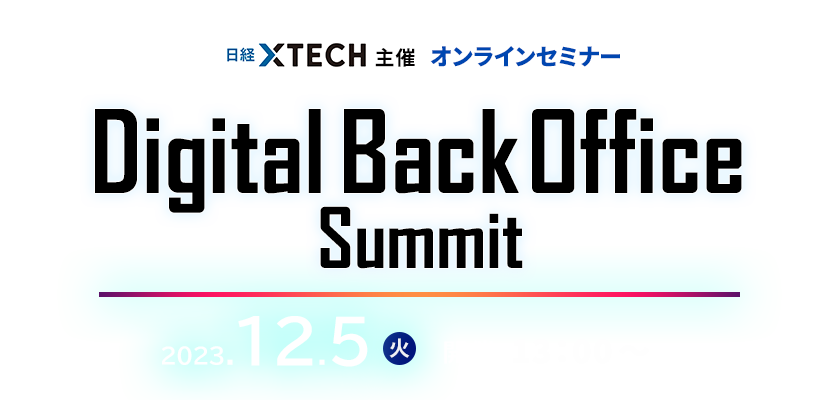

お申し込み受付を
終了しました
総務・経理・一般事務・庶務・人事・法務などのバックオフィス業務は、企業を支える重要な役割を果たしています。しかし長年、人材やITの投資は営業やマーケティングなどフロント業務向けが優先され、バックオフィスは後回しにされる傾向がありました。
しかし長引くコロナ禍や働き方改革によって、バックオフィスDXの重要性が急速に高まっています。バックオフィスのDX化は以下のメリットが得られ、企業の経営力·競争力強化のために必須の取り組みと言えるからです。
●生産性向上業務効率化を実現できる
●バックオフィス業務の精度が上がり、経営のスピードアップにつながる
●人件費のコスト削減効果と人的リソースを有効活用できる
●テレワーク導入など多様な働き方へ対応でき、人材確保につながる
●社員のモチベーション向上や、ケアレスミス削減に役立つ
このような状況から、日経クロステックは「Digital Back Office Summit 2023 Winter」を開催します。本セミナーでは、企業の経営者、バックオフィス部門、情報システム部門の担当者を対象に、バックオフィスのDX化による期待効果と実現するためのポイントをご紹介します。ぜひご参加ください。
本セミナーはオンラインセミナー（Live配信）です。
本セミナー終了後に主催者アンケートがございます。
ご回答いただきました方の中から抽選で100名様に
「Amazonギフト券（1,000円分）」をプレゼントさせていただきます。
ぜひ最後までご視聴ください。
- ※「Amazonギフト券（1,000円分）」は催事終了後の主催者アンケートへご回答いただきました方の中から抽選で100名様に後日ご登録のメールアドレス宛にお送りさせていただきます。
- ※Amazon.co.jpは、本プロモーションのスポンサーではありません。
- ※Amazon、Amazon.co.jp およびそれらのロゴは、Amazon.com, Inc.またはその関連会社の商標です。
開催概要
- 名称
- Digital Back Office Summit 2023 Winter
- 日程
-
2023
年
12
月
5
日（火）
13：00～16：25（予定）
- 開催形式
- オンライン
- 主催
- 日経クロステック
- 協賛
-
デル・テクノロジーズ、 freee、 LegalOn Technologies、 リセ、
マネーフォワード （ABC順）
- 参加料
- 無料（事前登録制）
プログラム
※講演者や講演時間など、プログラムは変更になる場合がございます。予めご了承ください。
-
13：00 ~ 13：30
-
【主催者講演】
バックオフィスのDXを推進する上でのポイント
慶應義塾大学
大学院政策・メディア研究科
特任教授岩本 隆 氏今、あらゆる組織でDXが求められており、DXは国家的な課題となっている。日本企業では、コロナ禍によって加速はしたものの、特にバックオフィスのDXが世界の各国・地域の企業に比べて立ち遅れている。本講演では、日本企業の先進事例等をもとにバックオフィスのDXを推進する上でのポイントについてお話する。
-
13：35 ~ 14：05
-
浮いた時間で“攻めの人事労務”に集中！
「工数50%減の総務変革」freee
freee人事労務プロダクト本部松本 華奈 氏中小企業が属人化や業務負担増加に悩む中、ITツール導入で、課題解決を図る総務担当者も多いです。
しかし、業務ごとに別々のツールを導入してしまったことで、従業員が使いこなせないなど別の問題が発生し、結果的に業務量が増えるというケースも見受けられます。
本講演では、ITツール導入時の重要ポイントや適切なツールの選定方法を解説します。また、freee人事労務の導入による、工数削減の成功事例も紹介します。
-
14：10 ~ 14：40
-
契約書AIレビュー支援クラウドサービスはどのように法務を効率化するか？ ～業務委託契約レビューのポイント～
リセ
代表取締役社長、弁護士藤田 美樹 氏法務部門では、契約書チェックに多大な負担がかかっているのではないでしょうか。 契約書業務には、専門性が高く法的知識や会社の業務知識が必要です。特に法務人数が限られる中小企業においては、契約書業務を安心安全に遂行するためのリーズナブルな契約書AIレビュー支援ツールの活用が求められます。
ツールの具体的な活用事例を踏まえて、実際に起こってしまったトラブル実例が「どのような状況で発生してしまったのか」、また「避ける方法はあったのか」などを弁護士がわかりやすく解説します。
-
14：45 ~ 15：15
-
デジタル化推進と業務改革に繋がる組織づくりとは
マネーフォワード
グループ執行役員
経理本部
本部長松岡 俊 氏経理部門は会計への専門的な知識が必要であることや間接部門のため人手補充に消極的なこともあり、人手不足に陥りやすい部門かと思います。加えて、昨今は労働人口の減少や大きな法改正等もあり、業務改革に向けた取り組み・組織づくりが急務です。本セッションでは、弊社経理部長が自社での経験を元に改善に向けた組織づくりのポイントを解説いたします。
-
15：20 ~ 15：50
-
契約業務のデジタル化とバックオフィスの生産性向上
～あるべきリスクマネジメント体制構築～LegalOn Technologies
SalesGroup Director吉田 晋 氏2023年は、「電子帳簿保存法の改正」や「インボイス制度の改正」に伴って、企業のコーポレート部門は、社内の制度を整え、仕組化し、社員への研修を行ったりと社内推進を進める1年となりました。
また、適法の指針が示された「契約書のAI審査」など、契約業務領域も加速的に変化が見られます。
本セミナーでは、法令対応にとどまらず、契約領域のDXによってあるべき「リスクマネジメント体制構築」及び、「コーポレートの生産性（企業の生産性）の向上」について紹介いたします。
-
15：55 ~ 16：25
-
【主催者講演】
RPA活用で11万時間の業務削減、
オープンハウスが取り組むDXによる営業支援
オープンハウスグループ
オープンイノベーション推進担当山尾 祥平 氏オープンハウスグループはRPAにより、年間11万時間の業務時間を削減しました。現場の課題解決手段として導入し、全社へ拡大。RPAを活用した「物件資料自動作成システム」や、 業界初の「オンラインチラシ全自動作成システム」などにより、作業工数を大幅に削減し、顧客満足向上につなげています。
お申し込み
■視聴環境事前ご確認のお願い
- » オンラインセミナー視聴マニュアル（PDF）はこちら
- Webセミナー【ライブ配信】ご参加にあたり、「視聴環境チェックサイト」での動作確認をお願いしております。音声および動画が正常に受信できるかを、下記「視聴環境チェックサイト」へアクセスしていただきご確認ください。
なお、お客様がご使用のパソコンおよび通信環境によってはWebセミナー【ライブ配信】にご参加いただけない場合がございますので、あらかじめご了承ください。
▼視聴環境チェックサイト（PC・スマートフォン）
- https://ondemand.seminar.vcube.com/checker/videostream
- ※チェックサイトで視聴に問題がある場合は、まずセミナーの推奨環境に合っているかをご確認ください。
▼セミナー推奨環境(ビデオストリーミング配信の「受講者」の項目をご確認ください)
-
※受講者側で推奨しているPCブラウザ・OSは、以下となります。
Windowsプラウザ・・・Microsoft Edge、Mozilla Firefox、Google Chrome
Macブラウザ・・・safari
WindowsOS：Windows 11、Windows 10
MacOS：macOS 最新版 -
※受講者側で推奨しているスマートフォン・タブレットのブラウザ・OSは、以下となります。
iOS ・・・iOS デバイス iOS 10以上、Safari
Android・・・ Android 6以上、Google Chrome - ※インターネット環境によっては視聴が出来ない場合がありますので、視聴確認サイトから、受講される環境にてテストをお願いします。
協賛
お問い合わせ
日経BP読者サービスセンターセミナー係
お問い合わせお申し込み受付を
終了しました